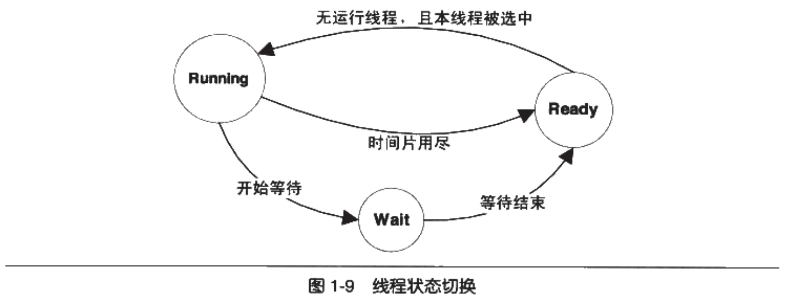
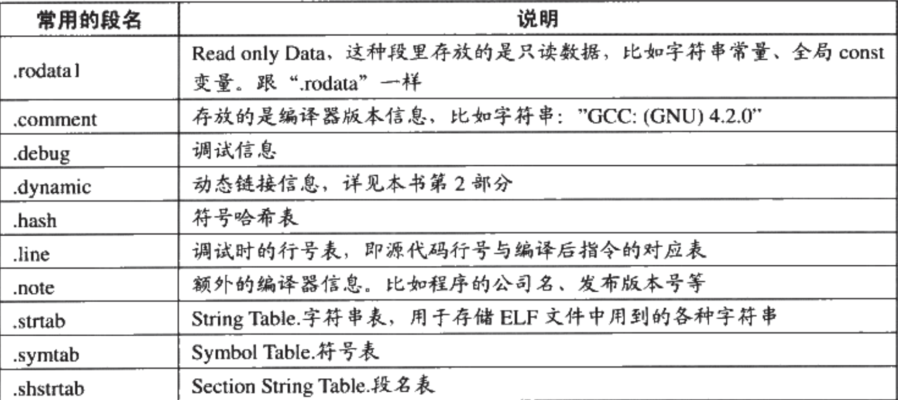
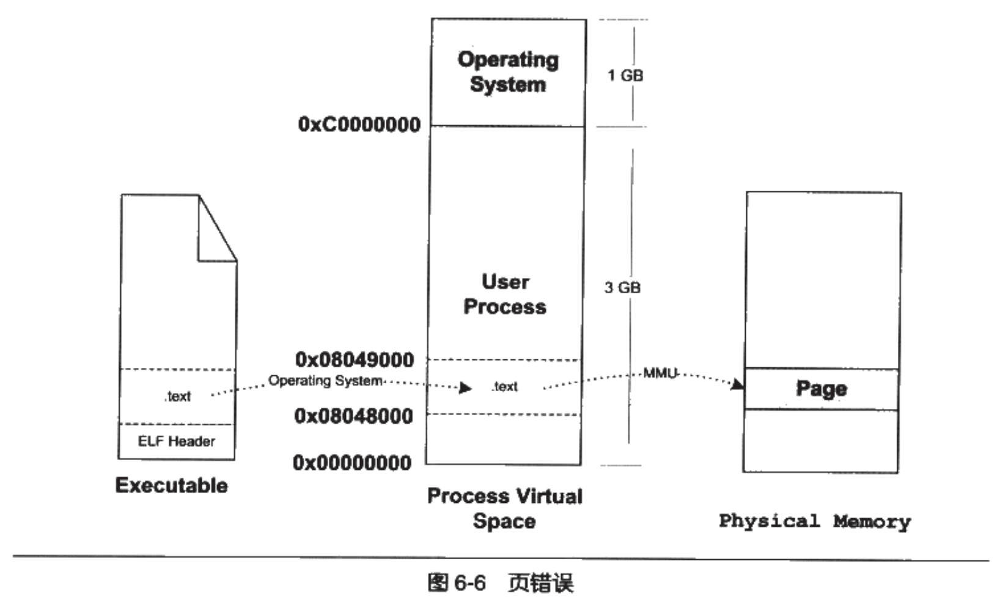
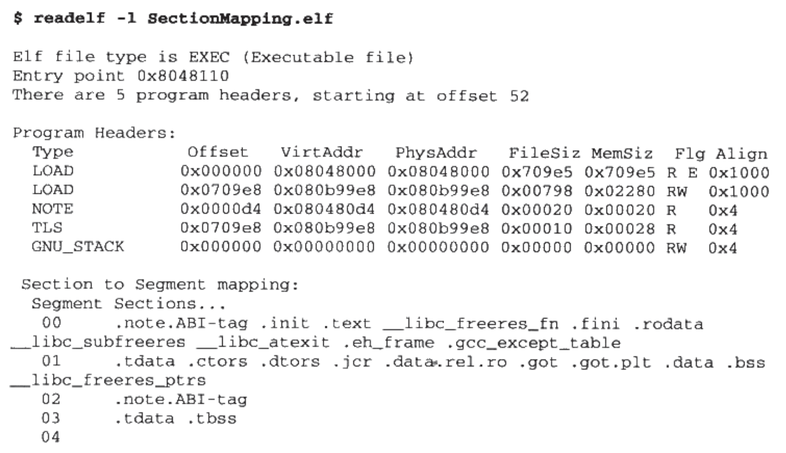
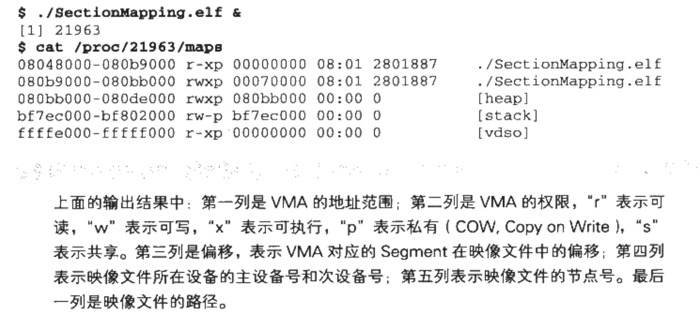
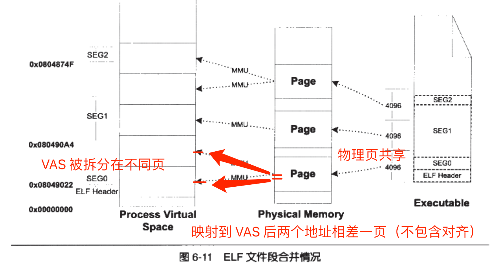
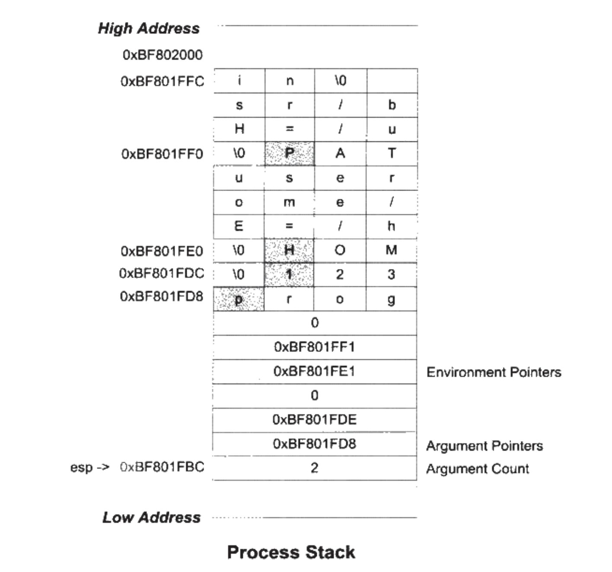

《程序员的自我修养 — 链接、装载与库》读书笔记（第 1-6 章）
本文内容主要总结自《程序员的自我修养 — 链接、装载与库》一书。
第一章：温故而知新
- （Page：6）传统的采用 PCI/ISA（ISA Bridge 连接在 I/O 总线上）及南北桥（北桥负责高速芯片，南桥负责低速芯片）设计的硬件架构。通过南北桥设计来解决高速设备（CPU、内存以及图形设备等）与低速设备（磁盘、USB、键盘以及鼠标等）之间的协作问题。
- （Page：7）对称多处理器 SMP / 多核处理器的：前者指每一个 CPU 在系统中所处的地位和所发挥的功能都是一样的，是相互对称的。而后者常应用在个人电脑中，指将多个处理器打包在一起，这些处理器之间共享比较昂贵的缓存部件（比如 L3），只保留多个核心，相当于 SMP 的简化版。
- （Page：10）系统调用接口在实现中往往是以“软中断”的方式提供（软中断则通常作为CPU指令集中的一个指令，以可编程的方式直接指示这种运行信息切换，并将处理导向一段中断处理代码）。
- （Page：10）几种 CPU 使用策略：
- 多程序运行：当某个程序暂时无需使用 CPU 时，监控程序把另外正在等待 CPU 资源的程序启动，得 CPU 能够充分利用起来（调度策略较粗糙）；
- 分时系统：每个程序运行一段时间后都主动让出 CPU 给其他程序，使得一段时间内每个程序都有机会运行一小段时间；
- 多任务系统：即“抢占式” CPU 分配。操作系统接管所有硬件资源，所有应用程序都以“进程”的方式运行在比操作系统权限更低的级别。CPU 由操作系统统一分配，每个进程根据优先级高低都有机会得到 CPU，但若运行超过一定时间，操作系统会暂停该程序。
- （Page：11）硬件驱动程序通常由硬件厂商提供，只要符合特定操作系统指定的接口和框架，便可在该操作系统上使用。
- （Page：15）进程间隔离：进程有独立的虚拟地址空间（VAS），且每个进程只能访问自己的地址空间。其大小与计算机地址总线的长度有关，比如 32 位机器，有 32 条（实际是 36 条）地址线，对应 4GB 可寻址大小。
- （Page：16）内存分段与分页：
- 内存分段：进程在其 VAS 内使用的地址会由硬件映射到实际物理内存空间的地址。对应用程序来说，可以使用的内存是连续且透明的（不用关心最后映射到物理内存的位置）。分段的方式是以整个进程为单位（以进程所需内存大小为段，映射到物理内存）进行的，若内存不足，被换入换出到磁盘的都是整个程序，因此效率低下。
- 内存分页：进程虚拟空间（虚拟页）、物理空间（物理页）与磁盘（磁盘页）之间通过分页来管理资源。通过分页，可以把常用的数据和代码页装载到内存中，把不常用的部分保存在磁盘中，需要用到时再取出即可。不仅如此，每个页也可以设置独立的权限属性，以保护操作系统和进程。对于大多数 CPU 来说，会使用 MMU（Memory Management Unit，一般被集成在 CPU 内部）来进行“页映射”即：转换 CPU 发出的虚拟地址到物理地址。
- （Page：19）线程基础：
- 多线程的优势：
- 可以有效利用 CPU 的等待时间（如某个线程在等待网络响应，此时可以调度其他线程运行）；
- 防止程序与用户之间的交互中断（计算线程 VS 交互线程）；
- 程序逻辑本身要求并发操作（多端下载软件）；
- 可以充分利用多 CPU 或多核计算机的能力；
- 相较于“多进程”应用，多线程的数据共享效率较高。
- 线程基本组成：
标准线程由：线程 ID、当前指令指针（PC）、寄存器集合以及堆栈组成。其中，栈、TLS 线程局部存储资源，以及某些寄存器（逻辑 PC）为线程私有。一般来说，一个进程由一个到多个线程组成，各个线程之间共享程序的内存空间（代码段、数据段、堆等）和一些进程级资源（打开文件和信号等）。
- 线程三种状态：

- 运行：此时线程正在执行。时间片用尽后将进入“就绪”状态；
- 就绪：此时线程可以立刻执行，但 CPU 已被其他线程占用。被 CPU 选中则进入“运行”状态；
- 等待：此时线程正在等待某一事件（通常是 IO 或者同步）发生，无法执行。等待完成后进入“就绪”状态。
- 线程调度：
- 优先级调度：根据线程优先级进行调度；
- 轮转法调度：各个线程轮流执行一小段时间。
IO 密集型线程总是比 CPU 密集型线程容易得到优先级的提升。因为当一个 CPU 密集型的线程获得较高优先级时，其他的低优先级进程就很可能被“饿死”。而为了避免饿死，调度系统也会逐步提升那些等待了过长时间的得不到执行的线程的优先级（比如基于“彩票调度”）。
- 线程安全：
- 一般把单指令的 CPU 操作称为“原子的”；
- 常见的同步与锁策略：
- 多元信号量（Binary Semaphore）：允许多个线程并发访问资源。一个初始值为 N 的信号量允许 N 个线程并发访问。线程访问资源时先获取信号量：(1) 将信号量值减一；(2) 如果信号量值小于 0，则线程进入等待状态，否则继续执行*。访问完资源后，线程将释放信号量，进行如下操作：(1) 将信号量值加一；(2) 如果信号量值小于 0，则唤醒一个等待中的线程*；
- 互斥量（Mutex）：同“二元信号量”。资源仅同时允许一个线程访问。与信号量不同的是，互斥量要求哪个线程获取哪个线程负责释放这个锁，其他线程无法干涉；
- 临界区（Critical Section）：对共享内存进行访问的程序片段。把临界区的锁的获取称为“进入临界区”，锁的释放称为“离开临界区”。临界区的作用域仅限于本进程，其他进程无法获取该锁；
- 读写锁：适用于“读写频繁，但偶尔写入”的情况。锁分为两种方式：共享的和独占的。如果锁处于共享状态，试图以任意方式获取锁都能成功，此时该锁分配给了多个线程。若其他线程试图以独占方式获取处于共享的锁，则需要等待锁被所有线程释放。反之，处于独占状态的锁无法被其他任何线程共享；
- 条件变量：可以让多个线程一起等待某个事件的发生，当事件发生时（条件变量被唤醒），所有的线程可以一起恢复执行。
- 成为可重入函数（表明该函数每次被重入后都不会产生任何不良后果，尤其是在多线程竞争的情况下）的要求：
- 不使用任何（局部）静态或全局的非 const 变量；
- 不返回任何（局部）静态或全局的非 const 变量指针；
- 仅依赖于调用方提供的参数；
- 不依赖任何单个资源的锁（mutex 等）；
- 不调用任何不可重入的函数。
- 防止过度优化：
volatile关键字：- 可以阻止编译器为提高速度将变量缓存到寄存器而不写回；
- 可以阻止编译器调整被该关键字修饰变量的指令顺序。
- 内存栅栏：防止因“乱序执行”造成的线程安全问题。可通过 C++ 中的
std::memory_order对象来控制 CPU 对内存栅栏的插入。
- 线程模型：
- 一对一模型：一个用户线程唯一对应一个内核线程。缺点：(1) 用户线程的数量受到内核限制；(2) 内核线程调度时的上下文切换开销较大，用户线程执行效率较低。
- 多对一模型：多个用户线程映射到一个内核线程，线程间的切换由用户态的代码来进行。好处在于高效的上下文切换和几乎无限制的线程数量；缺点在于如果一个用户线程阻塞，那么所有的线程都将无法执行。
- 多对多模型：多个用户线程对应多个内核线程。
第二章：编译和链接
- （Page：39）预编译阶段（C/C++）：主要处理 “#” 开始的预编译指令。
- 将所有 “#define” 删除，并且展开所有宏定义；
- 处理所有条件预编译指令；
- 处理 “#include” 预编译指令，将被包含的文件的内容插入到该预编译指令的位置（递归进行）。
- 删除所有注释；
- 添加行号和文件名标识，便于编译器产生行号信息，用于错误和警告的提示；
- 保留所有 “#pragma” 指令，以便编译器使用。
clang++ -E ./main.cc -std=c++17 -o main.i # -E 表示只进行预编译；经预编译后生成的中间文件内容示例：
# 1 "./main.cc"
# 1 "" 1
# 1 "" 3
# 418 "" 3
# 1 "" 1
# 1 "" 2
# 1 "./main.cc" 2
# 1 "/Applications/Xcode.app/Contents/Developer/Toolchains/XcodeDefault.xctoolchain/usr/bin/../include/c++/v1/memory" 1 3
# 652 "/Applications/Xcode.app/Contents/Developer/Toolchains/XcodeDefault.xctoolchain/usr/bin/../include/c++/v1/memory" 3
# 1 "/Applications/Xcode.app/Contents/Developer/Toolchains/XcodeDefault.xctoolchain/usr/bin/../include/c++/v1/__config" 1 3
... - （Page：41）.o 文件由汇编器输出，是在进行链接前的中间文件，一般称为“目标文件”。
- （Page：42）编译基本流程：
- 源代码 ->
- 词法分析 ->
- 语法分析 ->
- 语义分析（分析语句是否有意义。检测声明和类型是否匹配、类型的转换有效性等）->
- 生成中间 IR ->
- 优化（基于 IR，代码优化指令生成，如“寄存器分配”）->
- 生成目标机器码。
- （Page：48）“链接”过程主要包括：
- 地址和空间分配；
- 符号决议；
- 重定位。
第三章：目标文件里有什么
- （Page：56）常见的可执行文件格式 PE（Portable Executable）以及 ELF（Executable Linkable Format）均是 COFF（Common File Format）的变种。其他不常见的格式还有 OMF（Object Module Format）等格式。动态链接库（.dll / .so）以及静态链接库（.lib / .a）也都按照可执行文件格式存储。即：Windows 下为 PE/COFF 格式，Linux 下为 ELF 格式。其中静态链接库主要是把多个目标文件（.o）捆绑在一起形成一个文件，再加上一些索引。
- （Page：57）四种 ELF 文件格式：
- 可重定位文件：包含了代码和数据。可以被用来链接成可执行文件或共享目标文件，静态链接库也可以归为这一类（.lib / .a）；
- 可执行文件：包含了可以直接执行的程序（.exe）；
- 共享目标文件：包含了代码和数据。借助静态链接，可以和一个“可重定位文件”链接生成新的目标文件；或者借助动态链接，和可执行文件结合，作为进程映像的一部分来运行（.dll / .so）；
- 核心转储文件：当进程意外终止时，系统可以将该进程的地址空间内容及终止时的一些其他信息转储到核心转储文件（core dump）。
可以使用 file 命令来查看文件类型：
file main # main: ELF 64-bit LSB relocatable, x86-64, version 1 (SYSV), not stripped- （Page：59）ELF 数据、指令分段存放的意义：
- 数据（可读写）和指令（只读）对于进程来说有着不同的读写权限，因此需要被分开；
- 可以提高 CPU 对数据和指令的缓存命中率（独立缓存）；
- 当运行程序的多个副本时，可以保证指令部分被共享（即在物理内存中只保留一份实体数据），而数据部分则独立于进程。
- （Page：64）ELF 文件主要结构（Section）：
- ELF 文件头：描述整个文件的文件属性，如：文件是否可以执行、静态链接/动态链接以及入口地址、目标硬件、目标操作系统等。除此之外，还包含一个“段表（Section Table）”，给出了各个段在文件中的偏移位置及其属性；
- ELF 代码段（.code / .text）：主要存放编译后的二进制机器指令；
- ELF 数据段（.data）：存放已初始化的全局变量和局部静态变量数据；
- ELF 只读数据段（.rodata）：存放只读变量（
const修饰的变量）数据和字符串常量； - ELF BSS 段（.bss）：存放未初始化的静态变量，以及初始化为 0 的全局或静态变量，对于“未初始化的全局非静态变量”则视语言和编译器而定，一般被放在 “COMMON” 块中（该段只是为这些变量预留位置而已，因此实际上只有一个长度信息，不占用文件大小）。
其他段结构：

- （Page：68）在 GCC 中，可以使用 “attribute((section(“FOO”)))” 的方式来指定变量所处的段（Clang 不支持该方式）。
- （Page：85）ld 在其链接脚本中提供的一些程序可以使用的特殊符号（具体定义取决于不同的平台及链接器）：
- __executable_start：程序起始地址（非入口地址）；
- __etext / _etext / etext：代码段结束地址；
- _edata / edata：数据段结束地址；
- _end / end：程序结束地址。
以上地址均指进程 VAS 的虚拟地址。使用方式如下：
#include <iostream>
extern "C" {
extern char __executable_start[];
}
int main(int argc, char** argv) {
/*
默认的链接脚本里指定符号 __executable_start 的默认值为程度在 VAS 中的载入基地址，即：
32 位：0x08048000，
64 位：0x400000；
...
{
PROVIDE (__executable_start = SEGMENT_START("text-segment", 0x400000)); . = SEGMENT_START("text-segment", 0x400000) + SIZEOF_HEADERS;
...
*/
std::cout << std::hex << __executable_start << std::endl;
return 0;
}- （Page：87）在现代 Linux 下的 GCC/Clang 编译器中，默认情况下已经去掉了在 C 语言符号前加 “_” 的名称修饰方式，但 Windows 平台下的编译器还保持着这样的传统。
- （Page：88）可以使用 c++filt 工具来查看被 Name Mangling 处理过的符号的原始形态。
- （Page：95）DWARF（Debug With Arbitrary Record Format）调试信息格式。可以用
strip来去除 ELF 中的调试信息。
第四章：静态链接
- （Page：99）通常对于 X86 硬件来说，段（Segment）的装载地址和空间的对齐单位是“页”，因此对输入目标文件进行“按序叠加”的方式并不适合，因为这样会产生很多零碎的段，在对齐的情况下，可能会浪费一定内存空间。正常情况下，链接器会选择“相似段合并”的方式。
- （Page：100）空间分配包含两个概念：
- 文件存储：诸如 .bss 段在 ELF 文件中不占用空间；
- 地址空间：当 ELF 被装载后，.bss 段需要在虚拟内存地址中分配对应大小的内存空间。
- （Page：101）两步链接：
- 空间与地址分配：扫描所有输入的目标文件，并获得它们中各个段的长度、属性和位置，并且将输入目标文件的符号表内的所有符号定义和引用收集起来，统一放到全局符号表；
- 符号解析与重定位：使用上一步中收集到的所有信息，读取输入文件中段的数据、重定位信息，并且进行符号解析与重定位、调整代码中的地址等。
- （Page：102）通常情况下 VMA（Virtual Memory Address）与 LMA（Load Memory Address）的值应该是一致的。
- （Page：107）ELF 中每一个需要符号重定位的段都有一个对应的重定位表（如：.text 对应的 .rel.text，.data 对应的 .rel.data）。
- （Page：111）COMMON 块的概念来自早期的 Fortran，早期的 Fortran 没有动态分配空间的机制，程序员必须事先声明它所需要的临时使用空间大小。Fortran 把这种空间叫做 COMMON 块，当不同的目标文件需要的 COMMON 块空间大小不一致时，以最大的那块为准。链接器在处理弱符号时会采用与 COMMON 块一样的机制，选择同名符号中占用空间最大的那个。直接导致需要 COMMON 机制的原因是编译器和链接器允许不同类型的弱符号存在，但本质原因还是由于链接器不支持符号类型。对于 C 代码中的未初始化的全局变量，编译器会将其默认放置于 COMMON 块中，而在最终的可执行文件中，这些符号仍会被存放于 .bss 段。而一旦一个未初始化的全局变量不是以 COMMON 块的形式存在，那么它默认就相当于一个强符号。
- （Page：113）编译器及链接器对 C++ 模板实例化的优化：使用 Link Once 段。即在每一个编译单元中将每一个模板的实例代码都单独地存放在一个段里，且每个段只包含一个模板实例。链接器在最后链接时便可以区分这些相同的模板实例段，然后进行合并优化。
- （Page：114）函数级别链接：为目标文件中的每一个函数都设置一个单独的段，在链接时去掉没有使用到的段，以减小可执行文件的大小。
- （Page：114）Linux 系统下一般程序的入口是 “_start”。C++ 全局对象的构造函数在 main 函数之前被执行，析构函数在 main 函数之后被执行。这两个函数对应 ELF 文件的两个特殊的段（其中的代码由 “Glibc” 安排执行）：
- .init：保存可执行指令，构成了进程的初始化代码。会在 main 函数之前被调用；
- .fini：保存进程终止代码指令。main 函数正常退出时，会执行这个段中的代码。
- （Page：115）如果要使两个编译器编译出来的目标文件能够相互链接，那么它们需要满足如下条件：采用同样的目标文件格式、拥有相同的符号修饰标准、变量的内存分布方式相同、函数调用方式相同等。上述这些跟可执行代码二进制兼容性相关的内容组成了 ABI。ABI 的兼容程度比 API 更为严格。C/C++ 语言的 ABI 由以下方面决定：
- C：
- 内置类型的大小和在存储器中的放置方式（大端、小端、对齐方式等）；
- 组合类型的存储方式和内存分布；
- 外部符号与用户定义符号之间的命名方式和解析方式；
- 函数调用方式，比如参数入栈顺序、返回值如何保持等；
- 寄存器使用约定，比如函数调用时那些寄存器可以被修改，哪些需要保存等。
- C++：
- 继承类体系的内存分布，如基类、虚基类在继承类中的位置等；
- 指向成员函数的指针的内存分布，如何通过指向成员函数的指针来调用成员函数，如何传递 this 指针。
- 如何调用虚函数，虚函数表的内容和分布形式，虚函数指针在目标文件中的位置等；
- 模板如何实例化；
- 外部符号的修饰；
- 全局对象的构造和析构；
- 异常的产生和捕获机制；
- 标准库的细节问题，RTTI 如何实现等；
- 内联函数的访问细节等。
- （Page：117）LSB（Linux Standard Base）标准以及 Intel Itanium C++ ABI 的出现提高了 Linux 发行版之间的 ABI 兼容性（并未完全改善），并使软件应用程序甚至可以二进制形式（ABI 兼容）在任何兼容系统上运行。
- （Page：118）在一个静态库文件（.a）中实际上包含了多个属于同一种类/目录的目标文件（.o）。可以使用
ar命令来查看静态库中包含的目标文件。 - （Page：123）一般链接器可采用如下三种方式控制链接过程：
- 使用命令行参数；
- 将链接指令存放在目标文件里，比如放到单独的一个段中；
- 使用独立的链接控制脚本。
- （Page：128）ld 有多种方法设置程序入口地址，即“进程执行的第一条用户空间的指令在进程地址空间的地址”：
- ld 命令的 -e 选项；
- 链接脚本的 ENTRY(symbol) 命令；
- 如果定义了 _start 符号，则使用该符号的值；
- 如果存在 .text 段，则使用该段的第一字节地址；
- 使用值 0。
- （Page：131）BFD（Binary File Descriptor Library）库提供了一种统一的接口来处理不同的目标文件格式（抽象层），其将目标文件抽象成一个统一的模型来进程处理。目前，GNU 下的 gcc、ld、gdb 以及 binutils 均使用 BFD 来间接处理目标文件，而非直接操作目标文件。
第五章：Windows PE/COFF
（略）
第六章：可执行文件的装载与进程
- （Page：150）CPU 位数决定了每个进程 VAS 的最大理论上限。比如 32 位为 4GB 大小。从程序的角度来看，在大部分情况下（除了早期的 MSC 体系）我们可以通过判断 C 语言程序中指针所占用的空间来计算虚拟地址空间的大小。
- （Page：152）PAE（Physical Address Extension）：通过适当地扩展地址总线来获得可以访问更多物理内存的能力，但同时保持应用程序当前 VAS 的大小。通过使用“窗口映射”（如 mmap）的方式可以将 VAS 中的一块虚拟内存映射到扩展的物理内存上（对应用透明，由操作系统和 MMU 负责支持）。
- （Page：154）内存动态装载即：将程序中最常用的那部分内部驻留在内存中，而将不太常用的部分暂时存放在磁盘中。主要分为以下两种方法：
- 覆盖装入：早期应用。通过自定义的“覆盖管理器”来管理程序中各个“块”的加载时机。这些块需要程序员手动进行分割，并根据互相依赖关系组织成“树状结构”，同胞节点根据要执行的不同功能可以互相覆盖替换，彼此之间不能相互依赖；
- 页映射；以“页”为单位来进行内存的释放和分配。
- （Page：157）进程的创建步骤：
- 创建一个独立的 VAS。这一步主要是创建映射函数（VAS 到物理内存）的数据结构（如页表。页表 PTE 中的 P 字段表明是否存在对应的物理内存，若没有，则触发“页错误 #PF”来加载对应的缺失页到物理内存）；
- 读取可执行文件头，并且建立 VAS 与可执行文件的映射关系（存放在特定的数据结构中）；
- 将 CPU 的指令寄存器设置成可执行文件的入口地址，启动运行（至此可执行文件的指令和数据扔尚未被装入内存）。
- （Page：159）Linux 中将进程虚拟地址空间（VAS）中的一个段叫做“虚拟内存区域”（VMA, Virtual Memory Area）。
- （Page：160）虚拟内存区域的实际物理内存分配是在发生“页错误”时才会进行的。这一步中需要 MMU 的帮助来管理虚拟内存地址到实际物理内存地址的转换关系，这其中也将涉及到 TLB 对地址转换规则的缓存。操作系统通过检测“页错误”来不断装载需要的页内容：

- （Page：161）ELF 文件中，段权限的几种组合（可读、可写、可执行三种权限的组合）：
- 以代码段为代表的权限为“可读可执行”的段；
- 以数据段和 BSS 段为代表的权限为“可读可写”的段；
- 以只读数据段为代表的权限为“只读”的段。
- （Page：161）ELF 可执行文件中会以 “Segment” 的形式来组织各个 Section 在虚拟内存区域中的分布，比如将某些权限相同的 Section 合并在一个 Segment 中，然后再按“页”进行组织，这样可以在某种程度上节省内存空间。
- （Page：164）描述 “Section” 结构的表叫做段表（Section Header Table），即“链接视图”的视角；而描述 “Segment” 结构的表叫做程序头表（Program Header Table），即“执行视图”的视角。可以通过
readelf -l来查看 ELF 可执行文件内的程序头表。

- 标记为 “LOAD” 的为实际需要装载的 Segment；
- 每一个 Segment 对应为一个虚拟内存区域（VMA）。
- （Page：165）ELF 共享库文件内也具有由 Segment 段组成的程序头表。
- （Page：166）Linux 下查看进程的虚拟地址空间分布：
cat /proc/<pid>/maps。 - （Page：166）进程在运行时所使用的堆和栈也被存放在其 VMA 中。其中：
- 第一列是 VMA 的地址范围；
- 第二列是 VMA 的权限；
- 第三列是 VMA 对应 Segment 在映像文件中的偏移；
- 第四列是映像文件所在设备的主次号；
- 第五列是映像文件的 inode 号；
- 最后一列为映像文件路径。
最后的 “[vdso]” 是一个内核的模块，位于 VAS 的高地址段。进程可以通过它来与内核进行交互。

- （Page：167）一个进程可以分为如下几种类型的 VMA 区域：
- 代码 VMA：权限只读、可执行；有映像文件；
- 数据 VMA：权限可读写、可执行；有映像文件；
- 堆 VMA：权限可读写、可执行；无映像文件，匿名，可向高地址扩展；
- 栈 VMA：权限可读写、不可执行；无映像文件，匿名，可向低地址扩展。
- （Page：169）在某些 Unix 系统下，装载进程数据的一个物理内存页面可能包含两个甚至多个 Segment 的数据，以减少内存碎片。此时，一个物理页会被映射两遍到进程的 VAS 中，使得上一个段的结束地址和下一个段的开始地址被分配在不同的页中（p_vaddr 除以对齐属性的余数等于 p_offset 除以对齐属性的余数）。

- （Page：172）进程初始化后会将环境变量参数以及传递给该进程的参数存放到进程 VAS 的栈中。然后将其中位于栈顶的参数个数和参数指针传递给应用 main 函数的两个参数（argc，argv）。esp/rsp 指针将一直指向 VAS 中的进程栈顶。

因此，根据进程中的栈内存分布，我们可以直接利用 argc 参数的地址（被放到栈上后）来访问随后位于栈中的其他参数以及环境变量（X86-64 Linux 存储环境变量的方式有所变化。X86-64 下函数调用会通过诸如 rdi / rsi 寄存器传递，main 函数内会将对应的 argc / argv 参数再存放到栈上的相邻位置，且相对位置不固定）：
0000000000401130 <main>:
401130: 55 push %rbp
401131: 48 89 e5 mov %rsp,%rbp
401134: 48 83 ec 20 sub $0x20,%rsp
401138: c7 45 fc 00 00 00 00 movl $0x0,-0x4(%rbp)
40113f: 89 7d f8 mov %edi,-0x8(%rbp) ; argc - [edi - 0x8].
401142: 48 89 75 f0 mov %rsi,-0x10(%rbp) ; argv - [rsi - 0x10].
401146: 48 8d 45 f8 lea -0x8(%rbp),%rax
40114a: 48 05 f8 ff ff ff add $0xfffffffffffffff8,%rax
401150: 48 89 45 e8 mov %rax,-0x18(%rbp)
401154: 48 8b 45 e8 mov -0x18(%rbp),%rax
401158: 48 8b 00 mov (%rax),%rax
40115b: 48 8b 30 mov (%rax),%rsi
40115e: 48 bf 04 20 40 00 00 movabs $0x402004,%rdi
401165: 00 00 00
401168: b0 00 mov $0x0,%al
40116a: e8 c1 fe ff ff callq 401030 <printf@plt>
40116f: 31 c9 xor %ecx,%ecx
401171: 89 45 e4 mov %eax,-0x1c(%rbp)
401174: 89 c8 mov %ecx,%eax
401176: 48 83 c4 20 add $0x20,%rsp
40117a: 5d pop %rbp
40117b: c3 retq
40117c: 0f 1f 40 00 nopl 0x0(%rax)#include <stdio.h>
#include <string.h>
int main(int argc, char** argv) {
char*** argvAddr = (char***) ((char*) &argc - 0x8); // pointer to the stack cell stroing pointer to char**.
printf("%s\n", **argvAddr); // argv[0].
return 0;
}- （Page：172）esp 寄存器（X86-64 下为 rsp 寄存器）：
- 一直指向程序栈的顶部；
- 当程序将数据添加到栈时，栈从高地址向低地址扩展;
- 当从栈中取出数据时，栈从低地址向上收缩到高地址。
- （Page：173）Linux 装载 ELF 过程：
- shell 调用 fork() 系统调用创建新的进程;
- 进程调用 execve() 系统调用执行指定的 ELF 文件；
- 调用 sys_execve() 内核系统调用，检查参数；
- 调用 do_execve() 读取文件前 128 个字节以判断文件类型等；
- 调用 search_binary_handle() 搜索合适的 ELF 文件装载过程；
- 调用 load_elf_binary() 装载 ELF 文件。
- 检测 ELF 文件有效性，如：魔数、程序头表中 Segment 段的数量等；
- 寻找动态链接的 “.interp” 段，设置动态链接器路径；
- 根据 ELF 文件程序头表的描述，对 ELF 文件进行映射，如：代码、数据、只读数据等；
- 初始化 ELF 进程环境；
- 将系统调用的返回地址设置为 ELF 文件的入口地址（e_entry / 动态链接器）。
- （Page：173）eip 寄存器（X86-64 下为 rip 寄存器）：CPU 通过 eip/rip 寄存器读取即将要执行的指令。每次 CPU 执行完相应的汇编指令之后，eip/rip 寄存器的值就会增加。